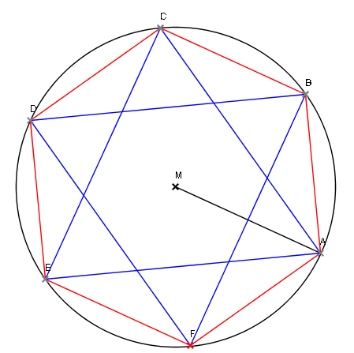

Regelmässiges Sechseck (Nr 7, p.22)

Konstruiere auf einer Kreislinie die Ecken eines regelmässigen Sechsecks ABCDEF.
a) Zeichne die Sehnen AC, BD, CE, DF, EA und FB.
b) Welche Eigenschaft haben alle gleich langen Sehnen in einem Kreis?
Bericht
- A wählen auf Kreislinie k(M,r)
- r = MA abtragen auf k → B, F
- r abtragen von B → C
- r abtragen von C → D
- u.s.w.
b) Alle gleich langen Sehnen haben denselben Abstand vom Mittelpunkt